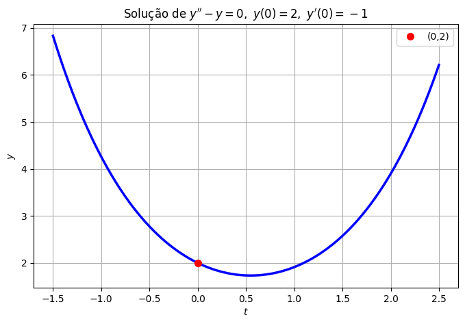
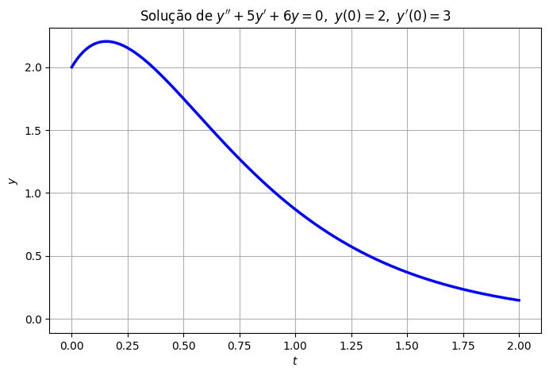
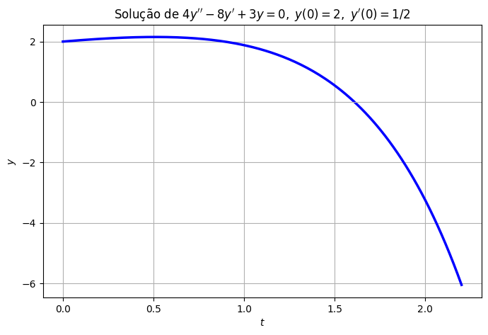

Equações Homogêneas e o Caso de Raízes Reais Distintas#
Terminamos a aula passada prometendo resolver a equação homogênea
usando a mesma ideia de “adivinhar e verificar” que funcionou tão bem para \(y'=ky\). É exatamente isso que vamos fazer agora.
Um chute inteligente: \(y=e^{rt}\)#
Para a equação de primeira ordem \(y'=ky\), a solução era uma exponencial, \(y=Ce^{kt}\). Vamos tentar a mesma ideia aqui: procurar soluções da forma
onde \(r\) é uma constante a ser determinada. Como \(y'=re^{rt}\) e \(y''=r^2e^{rt}\), substituir esse chute na equação vai transformar a equação diferencial numa equação algébrica para \(r\), que será bem mais fácil de resolver. Vamos ver como isso funciona na prática, com dois exemplos concretos.
Exemplo 1#
Resolva
Aqui \(a=1\), \(b=0\), \(c=-1\). Substituindo \(y=e^{rt}\), \(y'=re^{rt}\), \(y''=r^2e^{rt}\) na equação:
Como \(e^{rt}\) nunca é zero (para nenhum valor de \(t\)), a única forma de essa igualdade valer é
Ou seja: \(y_1=e^{t}\) e \(y_2=e^{-t}\) são soluções. Assim como aconteceu para \(y'=ay+b\), qualquer combinação linear dessas duas soluções também é solução (vale a pena verificar isso, porque vamos usar esse fato o tempo todo):
Usando as condições iniciais: em \(t=0\), \(y=c_1+c_2=2\). Derivando, \(y'=c_1e^{t}-c_2e^{-t}\), e em \(t=0\): \(c_1-c_2=-1\). Resolvendo o sistema (some as duas equações): \(c_1=\tfrac12\), \(c_2=\tfrac32\). Logo,
Vamos conferir essa solução — a equação e as duas condições iniciais — com o Python:
import sympy as sp
t = sp.symbols('t')
y = sp.Rational(1, 2)*sp.exp(t) + sp.Rational(3, 2)*sp.exp(-t)
print(r"y'' - y =", sp.simplify(sp.diff(y, t, 2) - y))
print(r"y(0) =", y.subs(t, 0))
print(r"y'(0) =", sp.diff(y, t).subs(t, 0))
y'' - y = 0
y(0) = 2
y'(0) = -1
import numpy as np
import matplotlib.pyplot as plt
t_vals = np.linspace(-1.5, 2.5, 200)
y_vals = 0.5*np.exp(t_vals) + 1.5*np.exp(-t_vals)
plt.figure(figsize=(8, 5))
plt.plot(t_vals, y_vals, 'b', linewidth=2.5)
plt.plot(0, 2, 'ro', markersize=7, label=r"(0,2)")
plt.title(r"Solução de $y''-y=0,\ y(0)=2,\ y'(0)=-1$")
plt.xlabel(r"$t$"); plt.ylabel(r"$y$")
plt.legend()
plt.grid(True)
plt.show()

Exemplo 2#
Encontre a solução geral de
De novo, \(y=e^{rt}\) dá
Essa é uma equação do segundo grau em \(r\) — dá para resolver por fatoração:
Logo, a solução geral é
Generalizando: a equação característica#
Repare no padrão dos dois exemplos: em ambos os casos, substituir \(y=e^{rt}\) transformou a equação diferencial numa equação algébrica em \(r\), e o fator \(e^{rt}\) sempre “sai de graça” (já que nunca é zero). Vamos fazer isso agora para a equação geral, sem números:
Substituindo \(y=e^{rt}\), \(y'=re^{rt}\), \(y''=r^2e^{rt}\):
Essa equação que envolve só \(r\), \(a\), \(b\) e \(c\), sem nenhuma derivada, é chamada de equação característica da EDO. E é só uma equação do segundo grau. Já sabemos resolver isso: pela fórmula de Bhaskara, o sinal do discriminante \(\Delta=b^2-4ac\) decide o tipo das raízes:
\(\Delta>0\): duas raízes reais e distintas.
\(\Delta<0\): duas raízes complexas conjugadas.
\(\Delta=0\): uma raiz real repetida.
Nesta aula, vamos tratar apenas o primeiro caso. Os outros dois, junto com um teorema geral que garante que não estamos deixando nenhuma solução de fora, ficam para as próximas aulas.
Caso \(\Delta>0\): raízes reais e distintas \(r_1\neq r_2\). Repetindo o argumento dos exemplos: \(y_1=e^{r_1t}\) e \(y_2=e^{r_2t}\) são soluções, e qualquer combinação linear delas também é:
De fato, como \(r_1\) e \(r_2\) são raízes de \(ar^2+br+c=0\), substituir essa combinação na equação original faz os dois termos zerarem separadamente, pelo mesmo motivo que \(y_1\) e \(y_2\) já eram soluções.
Ainda, como \(r_1\neq r_2\), sempre é possível achar \(c_1,c_2\) para satisfazer qualquer condição inicial \(y(t_0)=y_0,\ y'(t_0)=y_0'\) — basta resolver um sistema linear \(2\times2\), exatamente como fizemos nos exemplos.
Exemplo 3#
Volte à equação do Exemplo 2, agora com condições iniciais:
Já sabemos que a solução geral é \(y=c_1e^{-2t}+c_2e^{-3t}\). Usando as condições iniciais: \(c_1+c_2=2\) e (derivando) \(-2c_1-3c_2=3\). Resolvendo o sistema, \(c_1=9\) e \(c_2=-7\). Logo,
t_vals = np.linspace(0, 2, 200)
y_vals = 9*np.exp(-2*t_vals) - 7*np.exp(-3*t_vals)
plt.figure(figsize=(8, 5))
plt.plot(t_vals, y_vals, 'b', linewidth=2.5)
plt.axhline(0, color='0.7', linewidth=0.8)
plt.title(r"Solução de $y''+5y'+6y=0,\ y(0)=2,\ y'(0)=3$")
plt.xlabel(r"$t$"); plt.ylabel(r"$y$")
plt.grid(True)
plt.show()

Exemplo 4#
Encontre a solução do problema de valor inicial
A equação característica é \(4r^2-8r+3=0\). Pela fórmula de Bhaskara:
A solução geral é \(y=c_1e^{3t/2}+c_2e^{t/2}\). Usando as condições iniciais e resolvendo o sistema (é um bom exercício refazer essas contas), chega-se a \(c_1=-\tfrac12\) e \(c_2=\tfrac52\), então
t_vals = np.linspace(0, 2.2, 200)
y_vals = -0.5*np.exp(1.5*t_vals) + 2.5*np.exp(0.5*t_vals)
plt.figure(figsize=(8, 5))
plt.plot(t_vals, y_vals, 'b', linewidth=2.5)
plt.axhline(0, color='0.7', linewidth=0.8)
plt.title(r"Solução de $4y''-8y'+3y=0,\ y(0)=2,\ y'(0)=1/2$")
plt.xlabel(r"$t$"); plt.ylabel(r"$y$")
plt.grid(True)
plt.show()

Três comportamentos possíveis#
Compare os Exemplos 3 e 4: no primeiro, as duas raízes são negativas, e a solução tende a zero. No segundo, uma das raízes é positiva (\(r=3/2\)), e a solução acaba disparando; nesse caso, para \(-\infty\), porque o coeficiente da exponencial com a raiz positiva (o termo dominante quando \(t\to\infty\)) é negativo.
De modo geral, quando \(r_1\neq r_2\) são reais, só existem três comportamentos possíveis para \(y=c_1e^{r_1t}+c_2e^{r_2t}\) quando \(t\to\infty\):
Se as duas raízes são negativas, ambos os termos morrem: \(y\to0\).
Se pelo menos uma raiz é positiva, esse termo domina e \(|y|\to\infty\) (para \(+\infty\) ou \(-\infty\), dependendo do sinal do seu coeficiente).
Se uma raiz é zero e a outra negativa (caso raro), \(y\) tende a um valor constante.
Isso deve lembrar uma ideia que já apareceu antes: lá na aula de modelagem, o sinal de \(a\) decidia se a solução de \(y'=ay+b\) explodia ou se acomodava num equilíbrio. Aqui, quem manda é o sinal das raízes da equação característica; uma pista de que existe uma conexão profunda entre os dois mundos (e, de fato, existe: vamos revisitar essa ideia quando estudarmos sistemas de EDs lineares).
O que vem a seguir#
Ficou de fora, por enquanto, o que fazer quando a equação característica tem raízes complexas (\(\Delta<0\)) ou uma raiz repetida (\(\Delta=0\)); dois casos que vão aparecer com frequência em sistemas físicos reais (sistemas subamortecidos, lembra?). Também ainda não provamos, de fato, que a família \(y=c_1e^{r_1t}+c_2e^{r_2t}\) contém todas as soluções da equação, apenas verificamos que ela funciona. Isso é assunto das próximas aulas.